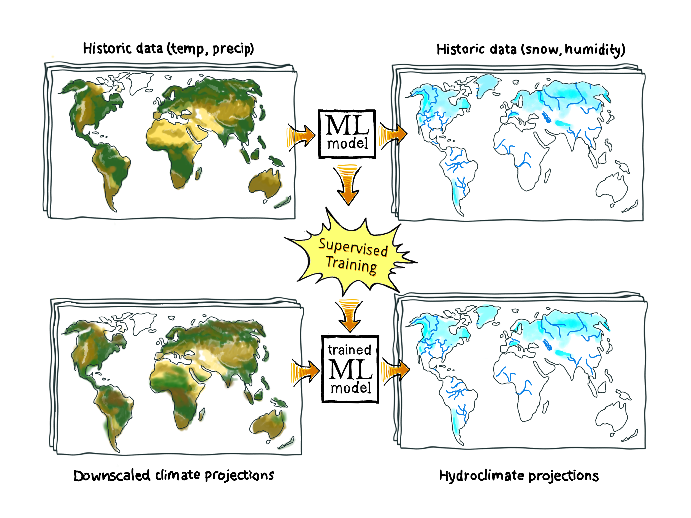

Welcome to the machine learning tutorial: “High resolution predictions of global snow using recurrent neural networks”#
This is a machine learning tutorial that highlights using large-scale climate projections and recurrent neural networks to model snow. In this tutorial we will show you how to train an ML model to evaluate, anywhere in the world, the impact of climate change on snowpack. This tutorial will offer two key contributions: (1) using off-the-shelf cloud datasets to produce a model that can generate high resolution snow projections anywhere on the globe in a hindcast setting and (2) evaluating the ability to use the trained model to understand future snow conditions under multiple climate scenarios. Throughout the tutorial we will comment on design decisions which are made when deploying the trained model with the future in mind. This is primarily accomplished by defining modular components for data loading, data transformation, and model loading. As an outcome of this tutorial we hope that you will understand how to apply such methods to your own research.
The overall workflow of this tutorial is encapsulated with the image below, with the target of the model being only snow:

Prerequisites#
In this tutorial we assume you have a basic understanding of several different pieces. It will be helpful for you to have some knowledge of:
Python programming
Data manipulation with xarray
Neural networks and the backpropagation algorithm
Learning goals#
The tutorial consists of 4 components, each with their own focus and learning goals. The components are meant to be completed sequentially, though each is technically self-contained. At a high level the components and learning goals are:
Working with large, gridded, climate datasets
Developing neural network training pipelines
Setting up model inference pipelines and model evaluation
Model deployment and being able to analyze model predictions
Scientific primer#
Snowpack provides freshwater resources for millions of people and supports vast ecosystems which are vulnerable to human-induced climate change. As the global climate warms we know this will generally decrease peak snowpack levels as well as reduce the overall fraction of precipitation that falls as snow (amongst other effects). Further, snow cover can drastically change the albedo of the land surface, affecting climate dynamics in their own rite.
However, actually quantifying these effects over the decadal-to-century timescale is challenging. Most importantly, snowpack evolution is heavily driven by topographic factors which can only be resolved at high spatial resolutions, while climate models can only be run at coarse spatial resolutions due to computational constraints. This bottleneck is generally seen in climate-change impacts studies and is usually handled by downscaling climate projections to more suitable spatial resolutions.
In this tutorial we leverage reanalysis data and climate projections downscaled to “high-spatial resolutions” to answer questions about the future of global snowpack. Specifically, we will show you how to train deep-learning based models that take in meteorologic and topographic information to produce estimates of snowpack.
We will use the ECMWF ReAnalysis Version 5 (ERA5) dataset which provides data relating a large number of atmospheric and land surface processes at the 25km scale over the historic period alongside topographic data to train deep-learning models to produce estimates of snowpack. Then we will explore future climate projections from the Coupled Model Intercomparison Project 6 (CMIP6) which are downscaled via the Generalized Analogue Regression Downscaling (GARD) and Multivariate Adaptive Constructed Analogues (MACA) methodologies to provide input data to our trained models.